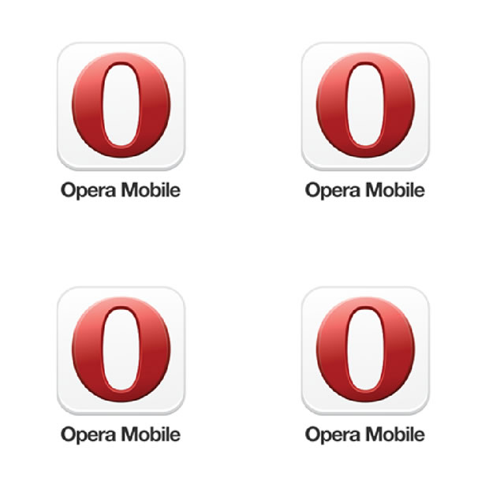

Raw WebGL 101 — Part 4: Textures
Introduction
Greetings, WebGL ninjas. The fourth tutorial is upon you, so be prepared: keep your browsers sharp and your scripts quick, and meld into the shadows, ready to strike! The striking will of course involve writing some cool WebGL, rather than infiltrating a shogun's palace, but I think that's ninja enough for us. This week we will turn our attention to importing textures from an image file into the canvas.
This article is a transcript of time 56:50 to 1:03:20 in Erik Möller's WebGL 101 tutorial, available on YouTube.
Note: You can run the finished texture example from this article to see what you are aiming towards.
Preparing to use textures in WebGL
We're going to build this example on top of the previous lesson's simple shader. So take a copy of 03 Minimal Shader file and save it as 05-texturing.html.
We'll also need an image to use as texture, so copy this Opera logo PNG file into a place in your working directory.
{kind=link}
Now we're going to remove the offset as we're not going to be using it here. To do so, first go into the vertex shader <script> element and remove the following line:
uniform vec2 uOffset;Next, remove the reference to it in the vTexCoord = aVertexPosition + uOffset; line below it to just leave this:
vTexCoord = aVertexPosition;And finally, back in the main script delete the offset array line:
var offset = [1, 1];and the two lines that link the offset to the program:
program.offsetUniform = gl.getUniformLocation(program, 'uOffset');and
gl.uniform2f(program.offsetUniform, offset[0], offset[1]);Now we're ready to start working on our texture.
Creating the texture
First, let's create a uniform by going into the fragment shader <script> element and putting the following line just above the main() function:
uniform sampler2D uSampler;sampler2D allows to sample pixel colours from a 2D image.
Now inside the main() function of the fragment shader, we need to change the gl_FragColor line to call the texture lookup function texture2D on the sampler as we want to get the colour information from the texture:
gl_FragColor = texture2D(uSampler, vTexCoord);That's it for the fragment shader. Now we need to modify the main <script> to pull in the sample texture. So, below
program.vertexPosAttrib = gl.getAttribLocation(program, 'aVertexPosition');add:
program.samplerUniform = gl.getUniformLocation(program, 'uSampler');And now, always inside the main <script>, we need to create the texture we are going to use, give it an image, and create our drawing function.
So first, we'll create a new texture and store it in a variable:
var texture = gl.createTexture();Next, we create a new image variable to store our image in:
var img = new Image();and specify the location of the image:
img.src = 'textures/opera.png';The drawing function
Now, right above the last line you added, we'll add our drawing function, which will run when the image has finished loading. Our initial drawing function will look like this:
img.onload = function() {
gl.activeTexture(gl.TEXTURE0);
gl.bindTexture(gl.TEXTURE_2D, texture);
gl.uniform1i(program.samplerUniform, 0);
gl.drawArrays(gl.TRIANGLE_STRIP, 0, vertexPosBuffer.numItems);
}The first line sets TEXTURE0 as the active texture. This line is not strictly necessary because TEXTURE0 is the default active texture anyway, but I've included it so you have it there if you need it for reference in the future.
The second line binds the texture we created earlier.
The third line, tells the shader which texture we're going to be using. WebGL can handle up to 32 textures during any given call to drawing functions (like gl.drawArrays), they're called TEXTURE0 to TEXTURE31. 1i means that the uniform will accept a single integer, and that integer is set to zero because we're going to be using texture 0.
The fourth line is the same you're already familiar with from our previous lesson.
Now we have a drawing function to play with, let's add to it.
Right after the second line of our drawing function, create a new line and enter the following to it:
gl.pixelStorei(gl.UNPACK_FLIP_Y_WEBGL, true);This sets how you should read the source data when it's set with texImage2d (on the next line). Specifically, we're flipping the Y-axis (or flipping the image around the X-axis) so the texture coordinates will have Ys that increase as you go up the screen when you use images in formats where Y-coordinates increase downwards (like the .png we're using here).
On the next line, we will actually specify our image data and parameters (using texImage2d). We are specifying that it's 2D and that it is using RGBA colour and each component in every pixel — r, g, b and a — is specified as un unsigned byte (ranging from 0 to 255). Finally we specify img, the variable where our image is stored:
gl.texImage2D(gl.TEXTURE_2D, 0, gl.RGBA, gl.RGBA, gl.UNSIGNED_BYTE, img)Finally, for this function, we want to specify some texture parameters, to use for drawing the image. Put these lines underneath the previous one:
gl.texParameteri(gl.TEXTURE_2D, gl.TEXTURE_MAG_FILTER, gl.NEAREST);
gl.texParameteri(gl.TEXTURE_2D, gl.TEXTURE_MIN_FILTER, gl.NEAREST);Mag filter is used when you're stretching an image over a larger area than the original source image and you need to figure out what's "in-between pixels". You can either linearly interpolate between the colours, or use the same value as the nearest pixel to it (resulting in more blockiness.)
Also, change your canvas size to something a bit bigger so you can see what is going on more clearly. I chose 900 x 900. Now try testing your code — you should be presented with something that looks like Figure 1.

Figure 1: A series of Opera company logos rendered inside a <canvas> using WebGL.
Changing the filter
You'll notice that currently the rendering looks a bit pixellated, because we chose a NEAREST filter. To see what difference the different filters make, try using the LINEAR filter instead:
gl.texParameteri(gl.TEXTURE_2D, gl.TEXTURE_MAG_FILTER, gl.LINEAR);
gl.texParameteri(gl.TEXTURE_2D, gl.TEXTURE_MIN_FILTER, gl.LINEAR);This will give a much smoother result, as shown in Figure 2.

Figure 2: The linear filter gives a much smoother result.
Wrap modes
Right now we are displaying four versions of the Opera logo. This is because we are currently indexing our image with values from -1 to 1, and the wrap mode is by default set to wrap content when it goes outside the range 0 to 1. So we're drawing one "O" for -1 to 0 and one for 0 to 1 in each dimension.
Let's update the code to just display a single copy of the image. First, add a solid border to the canvas so it is easier to visualise where the canvas is, and what is going on:
<canvas id='c' width='900' height='900' style="border: 1px solid black;">
</canvas>Let's explore how wrap modes work. We're drawing a quad that covers the entire canvas and we're texturing it with a "O". The quad coordinates range from -1 to 1 along both the x and y axes. To draw only one "O" you should have coordinates going from 0 to 1. If we change to clamp in one direction you'll only see two O's: the clamped axis will not draw a O in the -1 to 0 range. If you clamp both axes, you'll only see one O drawn. Add the following texParameter lines below the previous two:
gl.texParameteri(gl.TEXTURE_2D, gl.TEXTURE_WRAP_S, gl.CLAMP_TO_EDGE);
gl.texParameteri(gl.TEXTURE_2D, gl.TEXTURE_WRAP_T, gl.CLAMP_TO_EDGE);S and T are the texture coordinate axes. Note that our axes start at (0,0) — the bottom left of a texture — and go to (1,1) — the top right.
This will give us the display shown in Figure 3.
Figure 3: Our four Opera logos have been reduced down to one.
Summary
That's it this for this week, my dear WebGL ninjas. Next time we will start ramping it up again, looking at how we can further improve our shaders with XHR.
This article is licensed under a Creative Commons Attribution 3.0 Unported license.
Comments
-

When will Opera support that?
No new comments accepted.Thomas Scholz
Friday, December 7, 2012